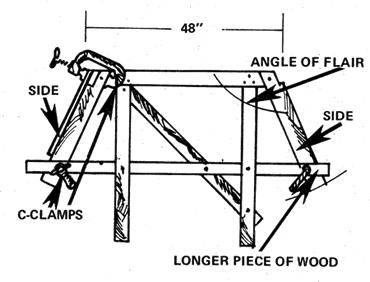

Figure 15. In this kind of vessel design, the bottom plays an important structural role. Its installation is not difficult, but should be done carefully to assure maximum strength and watertight joints. The chine bevel should ensure a perfectly smooth fit between the sides and the floor. Regularity of surface along this junction is crucial. One way to make sure the bevels on both sides are equal is to rip the chines from a wider board.